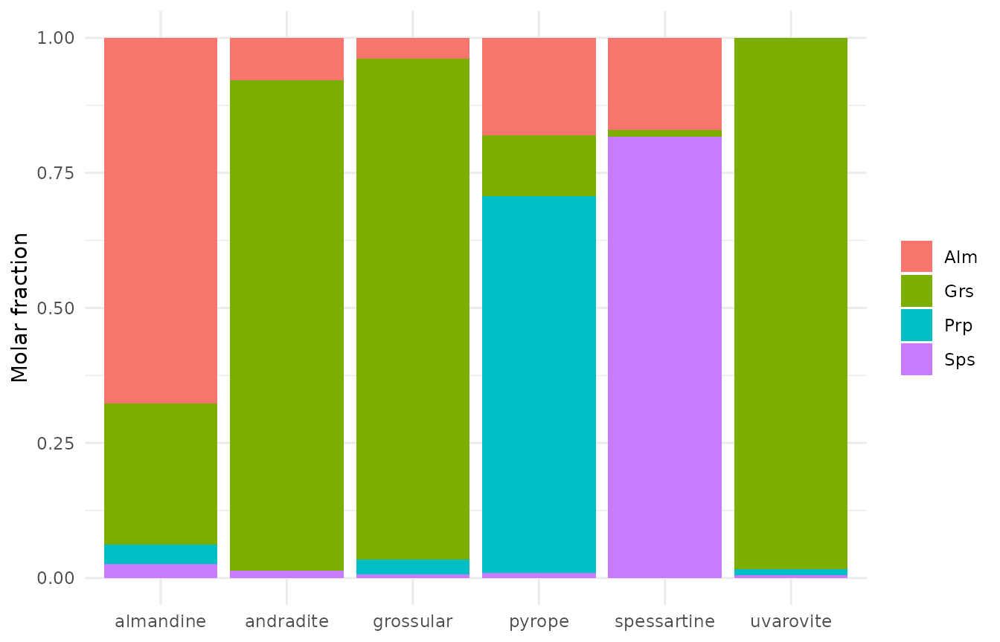
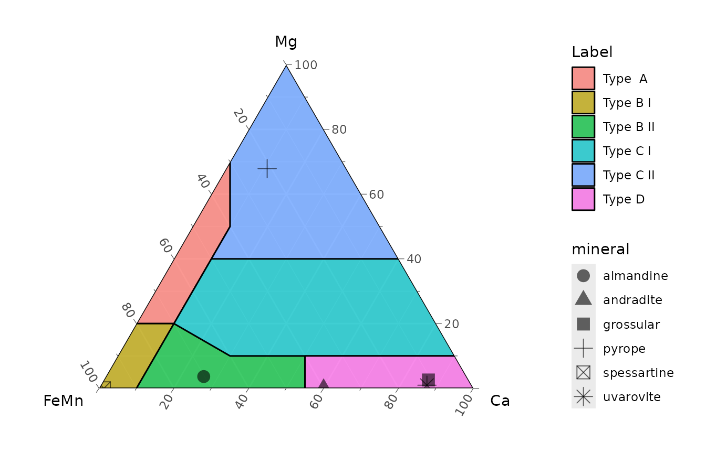
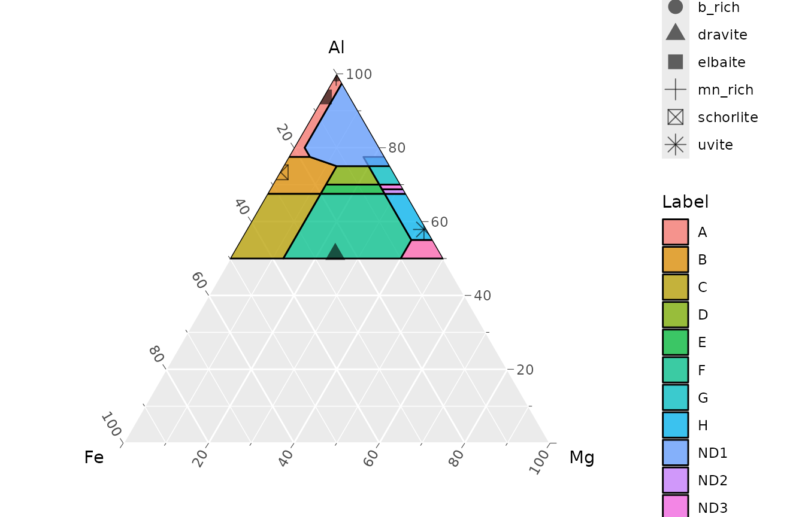

Mineral formulae (APFU)
mineral-formula.Rmdchemical_formula() converts oxide wt% (EPMA, SEM-EDS)
into atoms per formula unit (APFU), normalizing either to a fixed number
of oxygens (base = "anions") or of cations
(base = "cations").
Input
One row per analysis, an identifier column called
specimen and one column per oxide, named as in the oxide
table of the package (SiO2, Al2O3,
FeO, Fe2O3, H2O_plus, …). The
oxides must be the last columns of the table, starting at
SiO2. Missing oxides can be NA; they are
treated as zero.
The package ships three small example tables with textbook compositions (Deer, Howie & Zussman):
read_ex <- function(file) {
read.csv(system.file("extdata", file, package = "ztR")) %>%
select(specimen, mineral, everything(), -X)
}
tourmaline <- read_ex("tourmaline_DHZ.csv")
garnet <- read_ex("garnet_DHZ.csv")
epidote <- read_ex("epidote_DHZ.csv")
garnet
#> specimen mineral SiO2 TiO2 Al2O3 Cr2O3 Fe2O3 FeO MnO MgO CaO
#> 1 1 pyrope 41.33 0.28 21.83 1.73 1.44 9.00 0.44 19.60 4.40
#> 2 2 almandine 36.70 0.75 21.40 NA NA 29.90 1.14 0.90 9.02
#> 3 3 spessartine 36.34 0.10 20.25 NA 0.92 7.30 34.51 NA 0.44
#> 4 4 grossular 39.04 0.12 20.43 NA 3.29 1.81 0.34 0.73 34.29
#> 5 5 andradite 36.48 0.50 6.80 NA 21.94 3.33 0.56 0.00 30.22
#> 6 6 uvarovite 36.77 NA 8.36 13.72 5.85 NA 0.22 0.27 34.56chemical_formula() returns specimen plus
one column per cation (and the normalization bases), so the result is
joined back to the input by specimen.
Tourmaline: 31 anions
tur <- tourmaline %>%
select(specimen, mineral) %>%
left_join(chemical_formula(tourmaline, oxigens = 31, cations = 16), by = "specimen")
tur %>% select(mineral, Si, Al, Fe, Fe3, Mg, Na, Ca)
#> mineral Si Al Fe Fe3 Mg Na
#> 1 dravite 6.080842 4.633893 0.973011956 1.2691460 2.181759396 0.50054707
#> 2 uvite 5.842633 5.131914 0.055709434 0.0000000 3.681637525 0.04095238
#> 3 schorlite 5.928376 6.454551 1.896319867 0.4311784 0.017994361 0.78567795
#> 4 elbaite 5.928888 7.779391 0.496371396 0.0000000 0.021877638 0.69553487
#> 5 mn_rich 5.854724 7.362553 0.019298232 0.0000000 0.002457209 0.84369268
#> 6 b_rich 4.909989 8.564199 0.006530162 0.0000000 0.000000000 0.40271377
#> Ca
#> 1 0.482185007
#> 2 0.957434850
#> 3 0.003695026
#> 4 0.117052803
#> 5 0.031788032
#> 6 0.291142012Garnet: 24 oxygens
gt <- garnet %>%
select(specimen, mineral) %>%
left_join(chemical_formula(garnet, oxigens = 24, cations = 16), by = "specimen")
gt %>% select(mineral, Si, Al, Fe, Fe3, Mn, Mg, Ca)
#> mineral Si Al Fe Fe3 Mn Mg
#> 1 pyrope 5.948124 3.702747 1.0832111 0.1733138 0.05363555 4.2051279
#> 2 almandine 5.898086 4.053354 4.0185762 0.0000000 0.15517986 0.2156235
#> 3 spessartine 6.006392 3.944659 1.0090382 0.1271665 4.83124612 0.0000000
#> 4 grossular 5.977115 3.686429 0.2317482 0.4212439 0.04409062 0.1666146
#> 5 andradite 6.266296 1.376641 0.4783616 3.1517276 0.08147597 0.0000000
#> 6 uvarovite 5.999195 1.607538 0.0000000 0.7981991 0.03040237 0.0656707
#> Ca
#> 1 0.67846105
#> 2 1.55313501
#> 3 0.07791823
#> 4 5.62479775
#> 5 5.56170768
#> 6 6.04130471End-member proportions follow directly from the X-site cations:
gt %>%
mutate(x_site = Fe + Mn + Mg + Ca,
Alm = Fe / x_site, Sps = Mn / x_site, Prp = Mg / x_site, Grs = Ca / x_site) %>%
select(mineral, Alm:Grs) %>%
pivot_longer(Alm:Grs, names_to = "end_member", values_to = "fraction") %>%
ggplot(aes(mineral, fraction, fill = end_member)) +
geom_col() +
labs(x = NULL, y = "Molar fraction", fill = NULL) +
theme_minimal()
Epidote: different oxygen bases per row
oxigens can be a vector with one value per row. Here the
Fe-free members are normalized to 12.5 oxygens and the rest to 13:
epidote %>%
select(specimen, mineral) %>%
left_join(chemical_formula(epidote, oxigens = c(12.5, 13, 12.5, 12.5, 12.5, 13), cations = 8),
by = "specimen") %>%
select(mineral, Si, Al, Fe3, Ca)
#> mineral Si Al Fe3 Ca
#> 1 zoisite 3.087089 2.916625 0.006820044 1.9039878
#> 2 clinozoisite 3.147901 2.984926 0.107301506 2.0304554
#> 3 epidote 2.934365 2.780901 0.486453903 1.9408238
#> 4 epidote 3.161394 1.621020 1.649536592 2.0180021
#> 5 piemontite 3.172913 2.205762 0.158234437 1.9932883
#> 6 allanite 3.227082 1.830098 0.675130514 0.9905941Ternary diagrams
Classification diagrams can be drawn with the companion package ggarnet, built on ggtern. The chunk below only runs when both are installed.
library(ggtern)
library(ggarnet)
ggarnet_fe_mn() +
geom_point(data = gt, aes(x = Fe3 + Fe + Mn, z = Ca, y = Mg, shape = mineral), size = 4, alpha = 0.6)
#> Warning: `aes_string()` was deprecated in ggplot2 3.0.0.
#> ℹ Please use tidy evaluation idioms with `aes()`.
#> ℹ See also `vignette("ggplot2-in-packages")` for more information.
#> ℹ The deprecated feature was likely used in the ggarnet package.
#> Please report the issue to the authors.
#> This warning is displayed once per session.
#> Call `lifecycle::last_lifecycle_warnings()` to see where this warning was
#> generated.
#> Warning: Using `size` aesthetic for lines was deprecated in ggplot2 3.4.0.
#> ℹ Please use `linewidth` instead.
#> ℹ The deprecated feature was likely used in the ggarnet package.
#> Please report the issue to the authors.
#> This warning is displayed once per session.
#> Call `lifecycle::last_lifecycle_warnings()` to see where this warning was
#> generated.
#> Warning in ggplot2::geom_polygon(data = grad, alpha = 0.75, size = 0.5, :
#> Ignoring unknown aesthetics: z
#> Warning in geom_point(data = gt, aes(x = Fe3 + Fe + Mn, z = Ca, y = Mg, :
#> Ignoring unknown aesthetics: z
ggarnet_tourmaline() +
geom_point(data = tur, aes(x = Fe3 + Fe, y = Al, z = Mg, shape = mineral), size = 4, alpha = 0.6)
#> Warning in ggplot2::geom_polygon(data = grad, alpha = 0.75, size = 0.5, :
#> Ignoring unknown aesthetics: z
#> Warning in geom_point(data = tur, aes(x = Fe3 + Fe, y = Al, z = Mg, shape =
#> mineral), : Ignoring unknown aesthetics: z